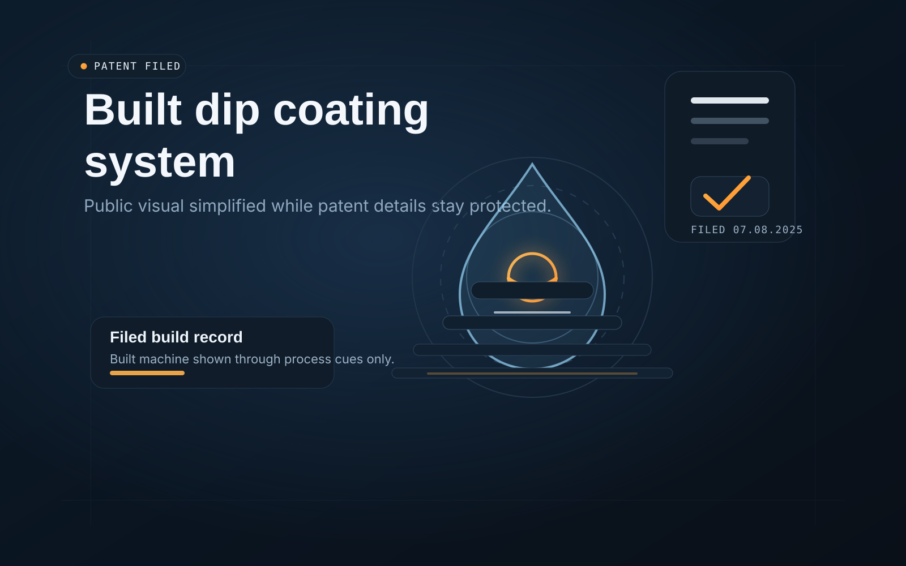

High-accuracy dip coating system
A built production-cell system designed to keep coating thickness consistent through controlled handling, measurement, and process conditions.
- Problem: Coating performance depended on controlled movement, measurement, and stable process behavior.
- Solution: The built production-cell system used coordinated handling and process control to keep the coating path stable.
- Result: US Patent Application No. 19/262,799 filed July 8, 2025, with a filing-safe public visual shown during patent processing.